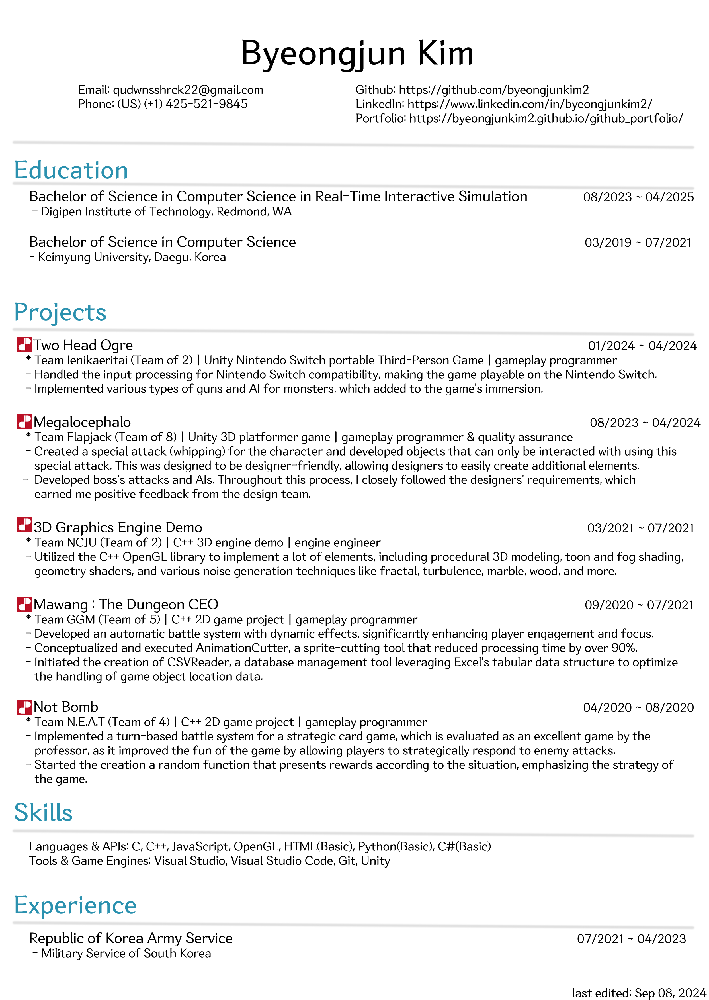

Byeongjun Kim's Portfolio
Programmer
 [Resume Download]Greetings! 안녕하세요! Welcome to my portfolio page! I hope you can take this opportunity to know what kind of person I am, please!
[Contact]
Phone(KR): (+82) 10-8770-8172
Phone(US): (+1) 425-521-9845
Email: qudwnsshrck22@gmail.com
Discord: sinyonuni
LinkedIn: LinkedIn
GitHub: As student ID As user ID
[Skills]
[Languages]
C
C++ JavaScript HTML (Basic) Python (Basic)[Library]
OpenGL
[Tools]
Visual Studio Visual Studio Code Git
[Game Engines]
Unity
[Projects]
Two Head Ogre
TEAM Ienikaeritai | 01/2024 ~ 04/2024
2-member team's Nintendo Switch portable third-person game project as an gameplay programmer
If video is unavailable, [Click me]
A third-person 3D game played on Nintendo Switch, where two players are responsible for camera control and movement, or attack respectively. Nintendo Switch Input: Handled the input processing for Nintendo Switch portability, making the game playable on the Nintendo Switch platform. Weapon acquisition and attack: Created three types of guns and weapon attacks to support various play styles. Monster AI: Implemented the game's main mechanic by creating monsters that recognize, chase, and attack the player. Map design: Leveraged a map where players and monsters can roam around, giving a sense of exploration.
Megalocephalo
TEAM Flapjack | 08/2023 ~ 04/2024
8-member team's 3D platformer game project as an gameplay programmer & quality assurance
If video is unavailable, [Click me]
[Game Download]A platformer game played in 2.5D on a 3D base map, where players avoid various obstacles to defeat the final boss. Boss monster AI: Created the boss's attack patterns, which can only be overcome by utilizing various elements of the game, enhancing the game's fun factor. Character whipping: Implemeted whipping (charge attack), one of the core mechanics, which greatly contributed to the game's completion. Unique platforms: Leveraged objects that only respond to whipping, adding diverse elements to the game. These were made as designer-friendly objects, allowing the team's designers to easily create new elements as well.
3D Graphics Engine Demo
TEAM NCJU | 03/2021 ~ 07/2021
2-member team's C++ 3D engine demo project as an engine engineer
Developed a range of advanced graphical features using the C++ OpenGL library, demonstrating strong expertise in graphics programming. Procedural 3D Modeling: Created dynamic and complex 3D models programmatically, allowing for efficient generation of diverse content. Toon and Fog Shading: Implemented stylized rendering techniques such as toon shading and atmospheric fog effects, enabling enhancing visual aesthetics. Geometry Shader: Leveraged geometry shaders to manipulate and transform primitive shapes, letting me on expanding the possibilities of object rendering. Various Noise Generation: Mastered various noise generation methods, including Fractal, Turbulence, Marble, Wood, Value, Cloudlike, Metaball, Splatter, Perlin, and Perlin3D, which are effective techniques for texture generation and terrain synthesis generation.
Mawang The Dungeon CEO
TEAM GGM | 09/2020 ~ 07/2021
5-member team's C++ 2D game project as a gameplay programmer
If video is unavailable, [Click me]
[Game Download]Developed an Automatic Battle System with Dynamic Effects: As part of a collaborative effort within Team GGM, I led the development of an automatic battle system in a C++ 2D game project. This system introduced dynamic visual effects that not only captivated players but also significantly improved their engagement and focus during gameplay. Executed AnimationCutter: In pursuit of streamlining sprite management, I conceived and successfully implemented AnimationCutter, a cutting-edge tool designed to simplify and expedite sprite-cutting processes. This innovative solution substantially reduced processing time, achieving efficiency gains of over 90%. Initiated the Creation of CSVReader - Specialized Database Management Tool: Recognizing the need for efficient data handling, I took the initiative to conceptualize and lay the groundwork for CSVReader. This specialized database management tool was simply tailored to handle Excel files with CSV extensions. Its primary goal was to streamline data utilization, making it accessible and manageable for the team. Video Trailer: Designed/rendered a video trailer that's likely to hook people's attention, and it's been quite popular at game pitches.
Not Bomb
TEAM N.E.A.T | 04/2020 ~ 08/2020
4-member team's C++ 2D game project as a gameplay programmer
If video is unavailable, [Click me]
[Game Download]Developmented a Turn-Based Battle System: As a pivotal member of Team N.E.A.T, I took charge of implementing a sophisticated turn-based battle system tailored for a strategic card game. The outcome was nothing short of remarkable, as players and peers provided overwhelmingly positive feedback. The new battle system not only injected an element of strategy but also elevated the overall enjoyment of the game. It allowed players to strategically respond to enemy attacks, adding depth and engagement to the gaming experience. Created a Dynamic Reward System: In pursuit of emphasizing strategy within the game, I pioneered the development of a dynamic reward system. This innovative system presented rewards to players based on the unique situation and choices made during gameplay. By tailoring rewards to match the context, players were motivated to think critically and strategically in order to maximize their in-game advantages. This not only elevated the game's strategic depth but also encouraged players to explore different approaches, enhancing overall engagement and replayability. Video Trailer: Designed/rendered a video trailer that's likely to hook people's attention, and it's been quite popular at game pitches.
Dungeon Maker (Prototype)
TEAM DunMe | 11/2019 ~ 12/2019
3-member team's C++ 2D game project as a lead programmer
Designed and Implemented a Developer-Friendly Map Editor: As the lead programmer for Team DunMe, I embarked on a pivotal project to design and implement a highly intuitive and developer-friendly map editor for our C++ 2D game project. Its user-friendly interface empowered our team members to effortlessly generate intricate game maps with precision and speed. This newfound efficiency had a transformative impact on our project's development timeline. Facilitated Game Expansion: Additionally, One of the outstanding outcomes of the map editor's implementation was its ability to facilitate game expansion. Our project experienced a smoother and more agile development cycle, enabling us to introduce new content and features with remarkable ease. The map editor acted as a foundational cornerstone for our game's growth and evolution.Tactical'S kill Fight (Prototype)
TEAM Beginner | 10/2019 ~ 11/2019
3-member team's C++ 2D game project as a technical programmer
[Game Download] Created a Dynamic Moving Laser Obstacle: In my role as a technical programmer within Team Beginner, I embarked on a project that harnessed my technical prowess and problem-solving skills. I successfully conceptualized and implemented a dynamic moving laser obstacle for our PVP game. Enhancing Team Comprehension: The introduction of this dynamic laser obstacle significantly enhanced our team's comprehension of game mechanics and interactive elements. The visual representation of the laser's behavior, achieved through precise mathematical modeling using linear equations, allowed team members to grasp complex concepts with clarity. This not only streamlined the development process but also simplified the team's understanding of game design principles.Mine Sweeper (Mastercopy)
- | 09/2019 ~ 10/2019
3-member team's JavaScript 2D game project as a lead programmer
Designed MineSweeper Mastercopy: In my role as a game developer, I undertook the design and development of the MineSweeper Mastercopy. This project was meticulously crafted with the goal of supporting not only the fundamental mine-sweeping mechanics but also an array of custom game variations, thereby demonstrating my prowess in game design and development. At its core, the MineSweeper Mastercopy seamlessly has the fundamental mechanics of mine-sweeping. This encompasses essential elements such as basic logic, flagging mechanisms, and intuitive shift-click interactions. Custom Game Variations: In addition to the fundamental mechanics, this Mastercopy has been meticulously designed to facilitate a broad range of custom game variations, allowing for extensive customization options. This includes the ability to adjust not only the size of the game map but also the number of mines, tailoring the gaming experience to individual preferences.